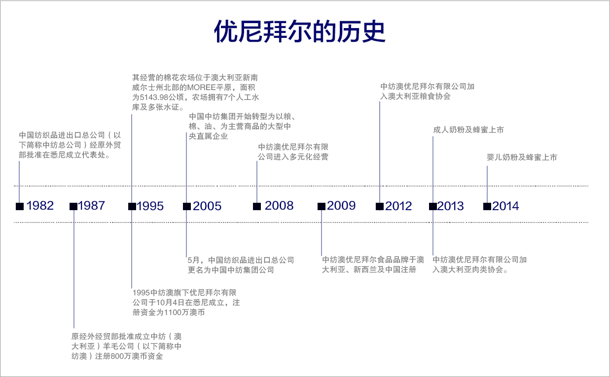
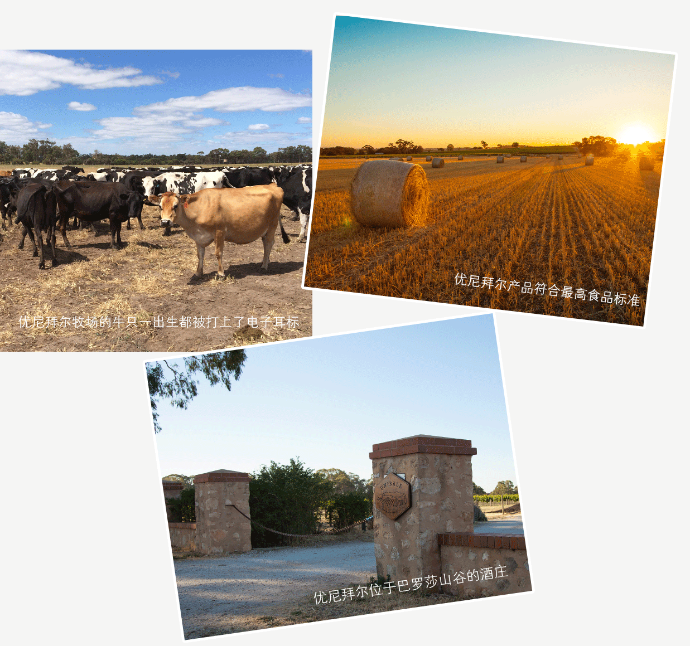
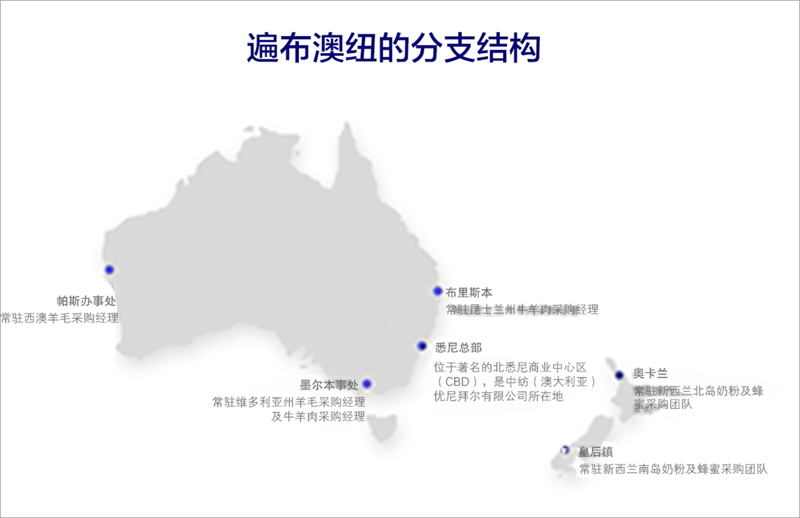
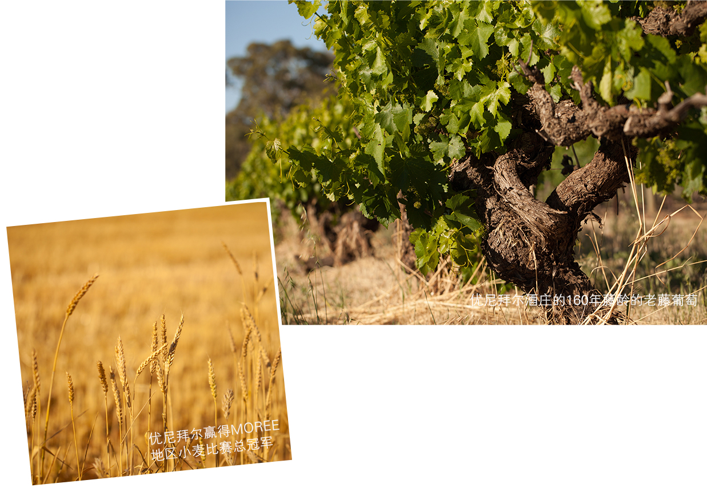
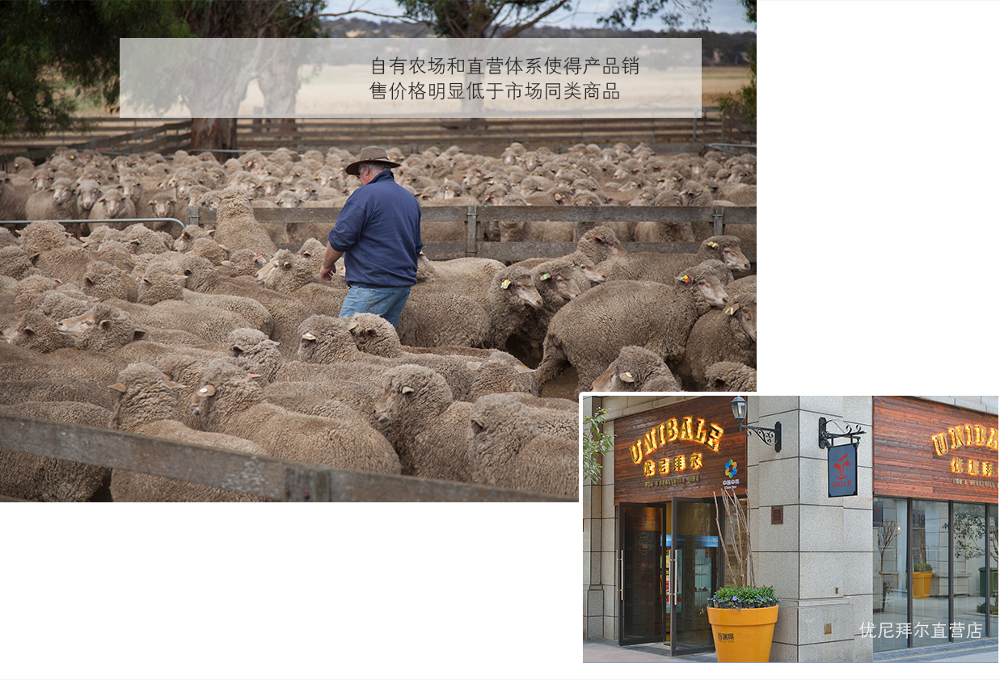
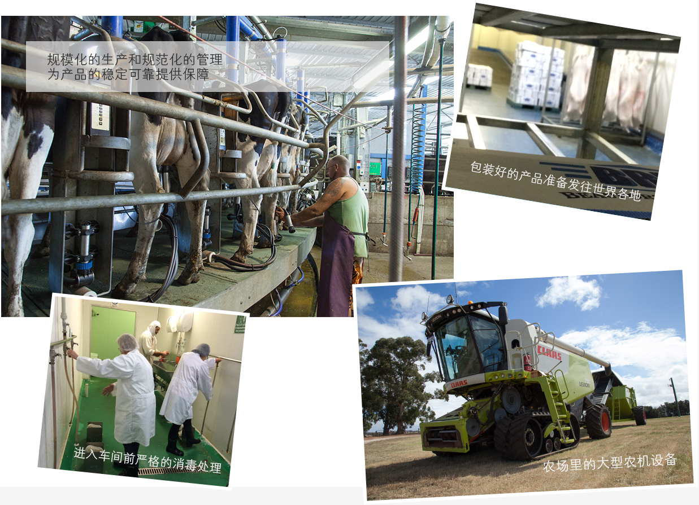
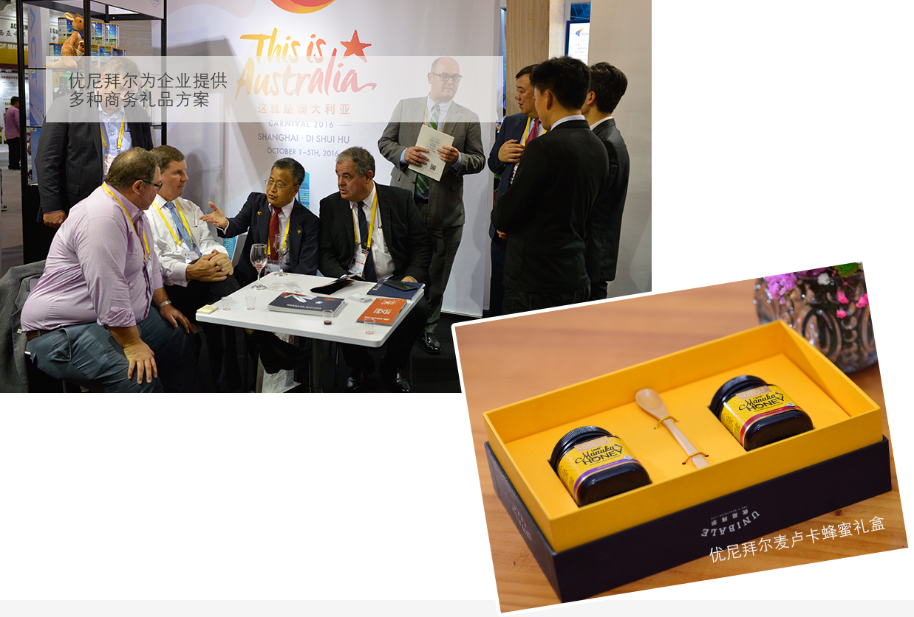
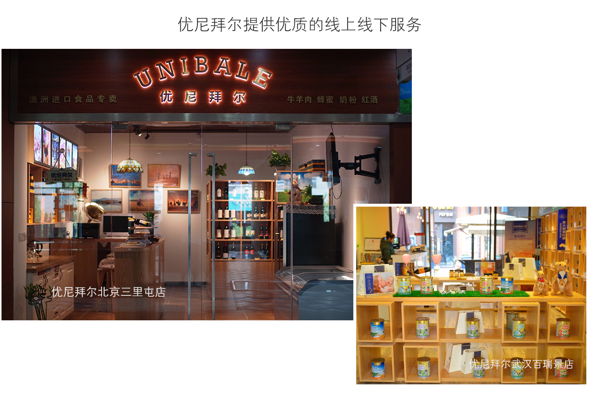
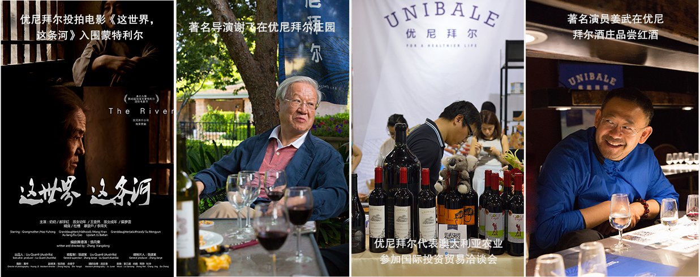

作为澳大利亚粮食协会和肉类及畜牧业协会的成员,优尼拜尔的产品符合最高食品标准
所有产品全部通过中国海关商检以大宗贸易的方式进入中国市场。所有产品通过中国商检部门的严格审查，绝无任何走私和假冒产品。作为澳大利亚粮食协会和肉类及畜牧业协会的成员，优尼拜尔的农产品和牛羊肉产品符合澳大利亚最高食品标准，被澳大利亚的超市和高端餐饮企业广泛采用，并出口到日本、新加坡和香港等地。以牛羊肉为例，作为澳大利亚肉类及畜牧业协会成员，优尼拜尔牛羊肉从育种、饲养、疾病防范到屠宰、分割、分装无一不是密切监督、严格管理。按照牛羊肉进入澳洲市场标准，优尼拜尔每一头牛羊自一出生都被打上电子耳标进入到澳洲政府的全国牲口监定系统（NLIS），并建立了一体化的管理体系来保证品质，在饲养、检疫、屠宰、分割、运输等各个环节都严格按照行业最高标准操作执行。

分支机构遍布澳新
随着业务的发展，优尼拜尔已经在澳大利亚和新西兰设立了多个分支机构。
2008年起，中纺澳大利亚公司旗下优尼拜尔品牌开始多元化经营，其位于新南威尔士州和维多利亚州的农场面积达到3万公顷，产品生产线和业务扩展到澳大利亚、新西兰和其它国家，由主营的羊毛、棉花等延伸向农业食品。出产羊毛、棉花、小麦、大麦、油菜籽、鹰嘴豆、高粱、肉类和乳品等。优尼拜尔在澳大利亚和新西兰已设立了多个分公司或办事处。

多次获得奖项
2010年，优尼拜尔位于南澳大利亚巴罗莎产区（Barossa Valley）斯坦迪什（The Standish）酒庄出产的百年老藤希拉子红葡萄酒在世界葡萄酒挑战大赛中获得银奖，在同年的醇鉴世界葡萄酒大赛中获得铜奖。
2011年优尼拜尔赢得了新南威尔士州MOREE地区总小麦比赛总冠军。该地区的小麦比赛是当地农业类的综合性比赛，包含农业产量、农产品质量、农场综合管理能力和产品销售状况等多个评比项目。

自有农场，直营直供
优尼拜尔现有的直营和加盟体系大大减少了商品流通的中间环节，让消费者能以更低的价格购买到更加优质的产品，从而得到实惠。优尼拜尔覆盖全国主要城市的专营店和销售网络让客户更加方便的购买产品和享受服务。京东快递、顺丰速运、宅急送等知名物流快递公司入驻优尼拜尔库房，让您及时享受到美味健康的优尼拜尔产品。

产品来源可靠、质量稳定
优尼拜尔在澳大利亚和新西兰广袤的农场和牧场提供了稳定可靠的产品来源，多年的农业经营和管理经验为产品的质量提供有力的保障。经过23年的经营，优尼拜尔农场产品，已经是被当地人广泛认可的优质商品。
2011年，优尼拜尔赢得了新南威尔士州MOREE地区小麦比赛总冠军。小麦比赛是该地区的综合农业比赛，评委会不仅把参赛农场产能和产品质量作为评判标准，还包括农场的经营管理等一系列考量内容。优尼拜尔脱颖而出，一举拿到冠军。
2012年，优尼拜尔被接受成为澳大利亚粮食协会成员。成为该协会成员必须经过严格的行业审查。从农场环境、农场产量产能、农业从业人员专业水平、农产品质量、农业产业规模到农产品品牌市场份额、品牌经营能力、品牌历史、品牌知名度等多方面综合考量，达到标准方可加入成为协会成员。
2013年，优尼拜尔被接受成为澳大利亚肉类及畜牧业协会成员。成为该协会成员要经过澳洲全国牲口监定系统（NLIS）的行业审核，严格遵守澳大利亚严格的畜牧业标准。加入协会的成员也不是终身制的，必须遵守协会制定的产品标准，一旦发现有不达标的产品，立即会被协会除名。目前，优尼拜尔的牛羊肉产品不仅供应澳大利亚商超，还被澳大利亚国内多家高档餐厅采用。同时，优尼拜尔产品也出口到日本、香港和新加坡等地，是优质食品的代名词。

为企业和机构提供定制化服务
优尼拜尔可以根据企业和机构的实际需求提供各种产品供应和配送解决方案，满足企业对内员工福利和对外商务礼品的多方面需求。优尼拜尔牛羊肉、蜂蜜、奶粉、红酒等产品长期占据各大金融单位、大型企业和各类院校首选清单，获得广泛的口碑和一致好评；其专业的配送体系和售后服务更是保持着极高的客户满意度。

优质的服务理念
优尼拜尔官方网站和电子商城提供客户方便快捷了解商品信息和购买产品的方式和渠道，同时线上专家会为您解答对于产品的各种疑问。自2014年国内第一家优尼拜尔专营店在山东青岛开业以来，优尼拜尔专营店陆续在武汉、上海、杭州、济南、西安、石家庄、北京等地开业，现今已遍布全国各省、市、自治区将近100多家实体店和配送网点，这些专营店为客户提供优质的消费体验和专业的产品服务，方便您将澳新美食直接带回家。
优尼拜尔扎根澳新，放眼全球，旨在将优质的农产品和食品引进中国，为国人健康生活和安全饮食保驾护航。优尼拜尔未来将成为专业、透明、快捷、可靠的全球农产品和食品信息交互平台，让来自全球的健康美食搭上来往中国的直通车。


优尼拜尔作为扎根澳新接轨国际的大型综合型企业，热衷为中澳贸易和文化交流做贡献。
2015年优尼拜尔独家冠名赞助金考拉国际华语电影节和悉尼新年音乐会。金考拉国际华语电影节是海外规模最大，影响力最深远的国际华语电影节，每年农历春节在澳大利亚的主要城市举办，邀请来自世界各地的华语影片参加竞赛和展映，为世界各国热爱华语电影的人士提供交流与合作的平台，扩大了华语电影在国际舞台上的影响力。
2016年，《中澳自由贸易协定》正式实施的第二年，第19届中国国际投资贸易洽谈会专门设立了700平米的澳大利亚国家馆，这是有史以来最大规模展示澳洲主要优质产品及服务、贸易及投资环境的专业展览。澳大利亚前贸易部长安德鲁·罗布担任澳大利亚国家馆名誉团长，优尼拜尔代表澳大利亚农业和食品参加展览。
2016年10月1日至5日，优尼拜尔联合澳大利亚商业贸易中心（ABTC）在上海滴水湖举办“这就是澳大利亚（This is Australia）”大型主题嘉年华活动。来自澳大利亚的文化、旅游、房产、教育、美食等内容纷纷入驻，给中国民众了解澳洲文化和优质资源提供了良好的交流平台。
2016年，优尼拜尔投拍电影《这世界 这条河》入围第40届加拿大蒙特利尔国际电影节。蒙特利尔国际电影节是国际电影制片人协会（FIAPF）公布的全球十五个国际A类电影节之一，每年8月25日至9月4日在加拿大举办。
 视频
美文分享
用户评价
登录/注册
视频
美文分享
用户评价
登录/注册